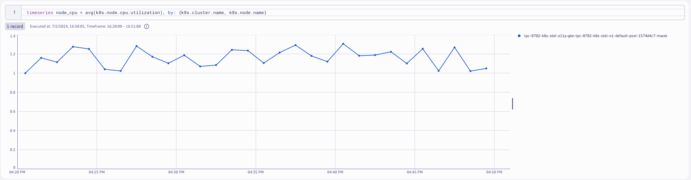
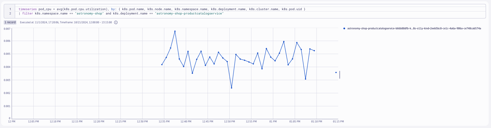
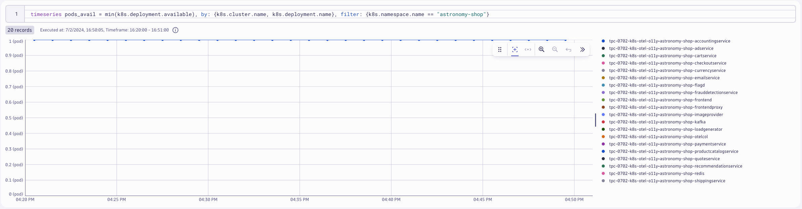
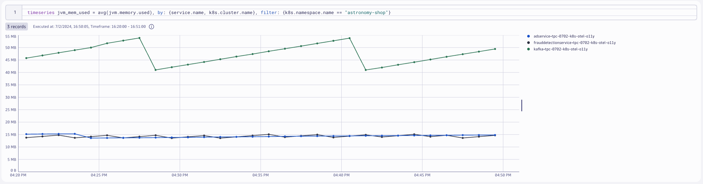
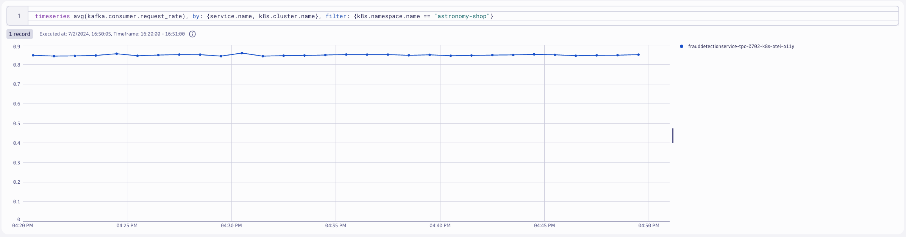
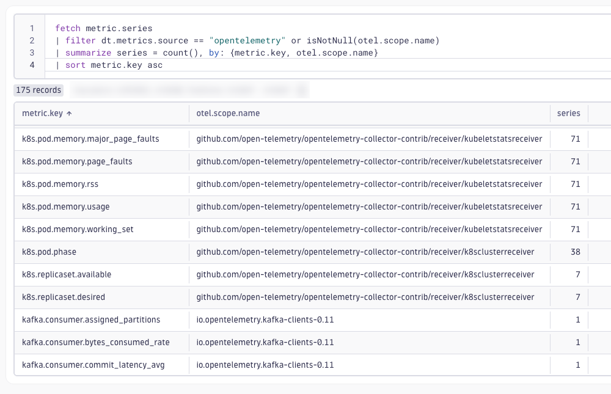

OpenTelemetry Metrics#
In this lab module we'll utilize the OpenTelemetry Collector deployed as a DaemonSet (Node Agent) to collect Node (kubelet) metrics from a Kubernetes cluster and ship them to Dynatrace. Additionally, we'll utilize a second OpenTelemetry Collector deployed as a Deployment (Gateway) to collect Cluster (Kubernetes API) metrics from the Kubernetes cluster and ship them to Dynatrace.
Lab tasks:
- Deploy OpenTelemetry Collector as a DaemonSet
- Configure OpenTelemetry Collector service pipeline for metric enrichment
- Deploy OpenTelemetry Collector as a Deployment
- Configure OpenTelemetry Collector service pipeline for metric enrichment
- Query and visualize metrics in Dynatrace using DQL
Prerequisites#
Import Notebook into Dynatrace
Define workshop user variables
In your Github Codespaces Terminal set the environment variables:
Sprint Environment
Are you using a Sprint environment for your Dynatrace tenant? If so, then use export DT_ENDPOINT=https://{your-environment-id}.sprint.dynatracelabs.com/api/v2/otlp instead of the live version below.
export DT_ENDPOINT=https://{your-environment-id}.live.dynatrace.com/api/v2/otlp
export DT_API_TOKEN={your-api-token}
export NAME=<INITIALS>-k8s-otel-o11y
Move into the metrics module directory
Command:
Collector for Node Metrics#
Kubernetes Node Metrics
Each Kubernetes Node runs a kubelet that includes an API server. The kubeletstats Receiver connects to that kubelet via the API server to collect metrics about the node and the workloads running on the node.
Deploy OpenTelemetry Collector#
Dynatrace Distro - Daemonset (Node Agent)
---
apiVersion: opentelemetry.io/v1beta1
kind: OpenTelemetryCollector
metadata:
name: dynatrace-metrics-node
namespace: dynatrace
spec:
envFrom:
- secretRef:
name: dynatrace-otelcol-dt-api-credentials
env:
- name: K8S_NODE_NAME
valueFrom:
fieldRef:
fieldPath: spec.nodeName
mode: "daemonset"
image: "ghcr.io/dynatrace/dynatrace-otel-collector/dynatrace-otel-collector:latest"
opentelemetrycollector.opentelemetry.io/dynatrace-metrics-node created
Validate running pod(s)
Command:
Sample output:
| NAME | READY | STATUS | RESTARTS | AGE |
|---|---|---|---|---|
| dynatrace-metrics-node-collector-2kzlp | 1/1 | Running | 0 | 1m |
Configure Kubernetes RBAC#
Create clusterrole with read access to Kubernetes objects
Since the receiver uses the Kubernetes API, it needs the correct permission to work correctly. For most use cases, you should give the service account running the Collector the following permissions via a ClusterRole.
---
apiVersion: rbac.authorization.k8s.io/v1
kind: ClusterRole
metadata:
name: otel-collector-k8s-clusterrole-metrics
rules:
- apiGroups: ['']
resources: ['events', 'namespaces', 'namespaces/status', 'nodes', 'nodes/spec', 'nodes/stats', 'nodes/proxy', 'pods', 'pods/status', 'replicationcontrollers', 'replicationcontrollers/status', 'resourcequotas', 'services']
verbs: ['get', 'list', 'watch']
- apiGroups: ['apps']
resources: ['daemonsets', 'deployments', 'replicasets', 'statefulsets']
verbs: ['get', 'list', 'watch']
- apiGroups: ['extensions']
resources: ['daemonsets', 'deployments', 'replicasets']
verbs: ['get', 'list', 'watch']
- apiGroups: ['batch']
resources: ['jobs', 'cronjobs']
verbs: ['get', 'list', 'watch']
- apiGroups: ['autoscaling']
resources: ['horizontalpodautoscalers']
verbs: ['get', 'list', 'watch']
Command:
Sample output:clusterrole.rbac.authorization.k8s.io/otel-collector-k8s-clusterrole-metrics created
Create clusterrolebinding for OpenTelemetry Collector service account
---
apiVersion: rbac.authorization.k8s.io/v1
kind: ClusterRoleBinding
metadata:
name: otel-collector-k8s-clusterrole-metrics-crb
subjects:
- kind: ServiceAccount
name: dynatrace-metrics-node-collector
namespace: dynatrace
roleRef:
kind: ClusterRole
name: otel-collector-k8s-clusterrole-metrics
apiGroup: rbac.authorization.k8s.io
clusterrolebinding.rbac.authorization.k8s.io/otel-collector-k8s-clusterrole-metrics-crb created
kubeletstats receiver#
By default, metrics will be collected for pods and nodes, but you can configure the receiver to collect container and volume metrics as well. The receiver also allows configuring how often the metrics are collected:
config:
receivers:
kubeletstats:
collection_interval: 30s
auth_type: 'serviceAccount'
endpoint: '${env:K8S_NODE_NAME}:10250'
insecure_skip_verify: true
metric_groups:
- node
- pod
- container
Default Metrics: OpenTelemetry Documentation
note: for this lab, the Kind cluster does not have cluster metadata to collect. These values will be spoofed for the purposes of this lab.
Query Node metrics in Dynatrace
DQL:
Result:
k8sattributes Processor#
The Kubernetes Attributes Processor automatically discovers Kubernetes pods, extracts their metadata, and adds the extracted metadata to spans, metrics, and logs as resource attributes.
The Kubernetes Attributes Processor is one of the most important components for a collector running in Kubernetes. Any collector receiving application data should use it. Because it adds Kubernetes context to your telemetry, the Kubernetes Attributes Processor lets you correlate your application’s traces, metrics, and logs signals with your Kubernetes telemetry, such as pod metrics and traces.
Add k8sattributes processor
The k8sattributes processor will query metadata from the cluster about the k8s objects. The Collector will then marry this metadata to the telemetry.
k8sattributes:
auth_type: "serviceAccount"
passthrough: false
filter:
node_from_env_var: KUBE_NODE_NAME
extract:
metadata:
- k8s.namespace.name
- k8s.deployment.name
- k8s.daemonset.name
- k8s.job.name
- k8s.cronjob.name
- k8s.replicaset.name
- k8s.statefulset.name
- k8s.pod.name
- k8s.pod.uid
- k8s.node.name
- k8s.container.name
- container.id
- container.image.name
- container.image.tag
labels:
- tag_name: app.label.component
key: app.kubernetes.io/component
from: pod
pod_association:
- sources:
- from: resource_attribute
name: k8s.pod.uid
- sources:
- from: resource_attribute
name: k8s.pod.name
- sources:
- from: resource_attribute
name: k8s.pod.ip
- sources:
- from: connection
opentelemetrycollector.opentelemetry.io/dynatrace-metrics-node configured
Validate running pod(s)
Command:
Sample output:
| NAME | READY | STATUS | RESTARTS | AGE |
|---|---|---|---|---|
| dynatrace-metrics-node-collector-drk1p | 1/1 | Running | 0 | 1m |
Query Pod metrics in Dynatrace
DQL:
timeseries pod_cpu = avg(k8s.pod.cpu.usage), by: { k8s.pod.name, k8s.node.name, k8s.namespace.name, k8s.deployment.name, k8s.cluster.name, k8s.pod.uid }
| filter k8s.namespace.name == "astronomy-shop" and k8s.deployment.name == "astronomy-shop-productcatalogservice"
Result:

Collector for Cluster Metrics#
The Kubernetes Cluster Receiver collects metrics and entity events about the cluster as a whole using the Kubernetes API server. Use this receiver to answer questions about pod phases, node conditions, and other cluster-wide questions.
Deploy OpenTelemetry Collector#
Dynatrace Distro - Deployment (Gateway)
Since the receiver gathers telemetry for the cluster as a whole, only one instance of the receiver is needed across the cluster in order to collect all the data. The Collector will be deployed as a Deployment (Gateway).
---
apiVersion: opentelemetry.io/v1beta1
kind: OpenTelemetryCollector
metadata:
name: dynatrace-metrics-cluster
namespace: dynatrace
spec:
envFrom:
- secretRef:
name: dynatrace-otelcol-dt-api-credentials
mode: "deployment"
image: "ghcr.io/dynatrace/dynatrace-otel-collector/dynatrace-otel-collector:latest"
opentelemetrycollector.opentelemetry.io/dynatrace-metrics-cluster created
Validate running pod(s)
Command:
Sample output:
| NAME | READY | STATUS | RESTARTS | AGE |
|---|---|---|---|---|
| dynatrace-metrics-cluster-collector-7bd8dc4995-6sgs2 | 1/1 | Running | 0 | 1m |
k8s_cluster receiver#
config:
receivers:
k8s_cluster:
collection_interval: 60s
node_conditions_to_report: [ "Ready", "MemoryPressure", "DiskPressure" ]
allocatable_types_to_report: [ "cpu","memory" ]
metadata_collection_interval: 5m
Query Deployment metrics in Dynatrace
DQL:
timeseries pods_avail = min(k8s.deployment.available), by: {k8s.cluster.name, k8s.deployment.name}, filter: {k8s.namespace.name == "astronomy-shop"}

Export Application Metrics#
The astronomy-shop demo application has the OpenTelemetry agents and SDKs already instrumented. These agents and SDKs are generating metrics (traces and logs too) that are being exported to a Collector running within the astronomy-shop namespace bundled into the application deployment. We want these metrics to be shipped to Dynatrace as well.
otlp receiver#
Adding the otlp receiver allows us to receive telemetry from otel exporters, such as agents and other collectors.
config:
receivers:
otlp:
protocols:
grpc:
endpoint: 0.0.0.0:4317
http:
endpoint: 0.0.0.0:4318
service:
pipelines:
metrics:
receivers: [otlp]
processors: [batch]
exporters: [otlphttp/dynatrace]
Export OpenTelemetry data from astronomy-shop to OpenTelemetry Collector - Dynatrace Distro
Customize astronomy-shop helm values
OpenTelemetry data created by agents and SDKs should include service.name and service.namespace attributes. We will make the service.namespace unique to our deployment using our NAME environment variable declared earlier, using a sed command on the Helm chart's values.yaml file.
default:
# List of environment variables applied to all components
env:
- name: OTEL_SERVICE_NAME
valueFrom:
fieldRef:
apiVersion: v1
fieldPath: "metadata.labels['app.kubernetes.io/component']"
- name: OTEL_COLLECTOR_NAME
value: '{{ include "otel-demo.name" . }}-otelcol'
- name: OTEL_EXPORTER_OTLP_METRICS_TEMPORALITY_PREFERENCE
value: cumulative
- name: OTEL_RESOURCE_ATTRIBUTES
value: 'service.name=$(OTEL_SERVICE_NAME),service.namespace=NAME_TO_REPLACE,service.version={{ .Chart.AppVersion }}'
service.namespace=NAME_TO_REPLACE\ service.namespace=INITIALS-k8s-otel-o11y
Command:
sed "s,NAME_TO_REPLACE,$NAME," astronomy-shop/collector-values.yaml > astronomy-shop/sed/collector-values.yaml
Update astronomy-shop OpenTelemetry Collector export endpoint via helm
Our collector-values.yaml contains new configurations for the application so that the astronomy-shop Collector includes exporters that ship to the Collectors deployed in the dynatrace namespace.
exporters:
# Dynatrace OTel Collectors
otlphttp/dttraces:
endpoint: http://dynatrace-traces-collector.dynatrace.svc.cluster.local:4318
otlphttp/dtlogs:
endpoint: http://dynatrace-logs-collector.dynatrace.svc.cluster.local:4318
otlphttp/dtmetrics:
endpoint: http://dynatrace-metrics-cluster-collector.dynatrace.svc.cluster.local:4318
Command:
helm upgrade astronomy-shop open-telemetry/opentelemetry-demo --values astronomy-shop/sed/collector-values.yaml --namespace astronomy-shop --version "0.31.0"
NAME: astronomy-shop\ LAST DEPLOYED: Thu Jun 27 20:58:38 2024\ NAMESPACE: astronomy-shop\ STATUS: deployed\ REVISION: 2
Query astronomy-shop metrics in Dynatrace
DQL:
timeseries jvm_mem_used = avg(jvm.memory.used), by: {service.name, k8s.cluster.name}, filter: {k8s.namespace.name == "astronomy-shop"}

DQL:
timeseries avg(kafka.consumer.request_rate), by: {service.name, k8s.cluster.name}, filter: {k8s.namespace.name == "astronomy-shop"}

Browse Metrics#
Browse available metrics in Dynatrace
Use the DQL command fetch metric.series to query metrics and their unique dimensions (series) in Grail.
- Filter on
dt.metrics.source == "opentelemetry"-> a dimension added by Dynatrace on ingest to identify the metric source - Filter on
otel.scope.name-> a dimension added by OpenTelemetry (SDK, Agent or Collector) through telemetry collection

Wrap Up#
What You Learned Today#
By completing this lab, you've successfully deployed the OpenTelemetry Collector to collect metrics, enrich metric attributes for better context, and ship those metrics to Dynatrace for analysis.
- One Dynatrace Distro OpenTelemetry Collector was deployed as a DaemonSet, behaving as an Agent running on each Node
- The
kubeletstatsreceiver scrapes metrics from the local kubelet on the Node - The
k8sattributesprocessor enriches the metrics with Kubernetes attributes that may be missing without it
- The
- A second Dynatrace Distro OpenTelemetry Collector was deployed as a Deployment, behaving as a Gateway
- The
k8s_clusterreceiver queries the Kubernetes cluster API to retrieve metrics - The
k8sattributesprocessor enriches the metrics with Kubernetes attributes that may be missing without it - The
otlpreceiver receives signals that are exported from agents, SDKs, and other Collectors
- The
- Metrics produced by the OpenTelemetry SDKs and Agents are exported to the
otlpreceiver - Dynatrace DQL (via Notebooks) allows you to perform powerful queries and analysis of the metric data
- Use the DQL command
fetch metric.seriesto query metrics and their unique dimensions (series) in Grail.
Continue#
In the next section, we'll integrate and apply what we have learned in the OpenTelemetry Capstone.